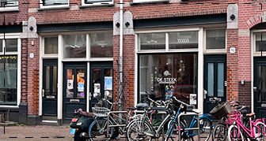
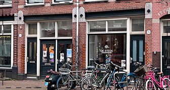
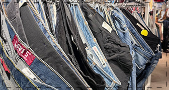
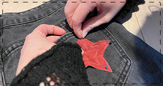

DE STEEK
DE STEEK is een naaicafé in Amsterdam waar je workshops kunt volgen om kleding te leren repareren, upcyclen en naaien. Om zo mensen te inspireren om bewuster met mode om te gaan.
DE STEEK is een naaicafé in Amsterdam waar je workshops kunt volgen om kleding te leren repareren, upcyclen en naaien. Om zo mensen te inspireren om bewuster met mode om te gaan.
Duurzame mode is belangrijk om verspilling te verminderen en de impact op het milieu te verkleinen. Het leuke eraan? Je creëert unieke kleding, bespaart geld en draagt bij aan een betere wereld.
Door de hulp van DE STEEK heb ik mijn eigen naaiproject gerealiseerd. Dankzij hun begeleiding leerde ik stap voor stap hoe ik mijn kleding kon repareren en aanpassen. Hierdoor heb ik mijn eigen unieke kledingstuk gemaakt.
